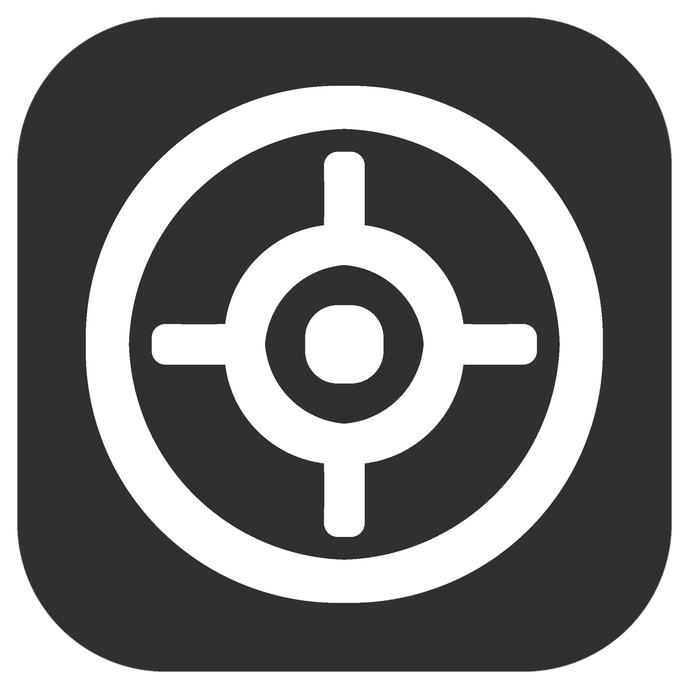

01
Install the first update manually
Open the DMG and move Focus Browser.app to Applications. The earlier locally accepted, unpublished 1.0.5 build did not include Sparkle, so moving from it is a manual step.

Focus BrowserPrerelease · macOS
A native Chromium build of Focus Browser for Mac. Calm graphite UI, FocusBlock, and FocusYoutube — without a mobile wrapper or a different browser engine.
01
Open the DMG and move Focus Browser.app to Applications. The earlier locally accepted, unpublished 1.0.5 build did not include Sparkle, so moving from it is a manual step.
02
Sparkle checks a dedicated Ed25519 signature, looks for updates automatically, and supports a manual check from the About page.
View the macOS appcastImportant
This prerelease is ad-hoc signed and is not yet notarized by Apple. macOS may display a warning. Download only from the linked GitHub Release and verify its SHA-256.
Focus Browser 1.0.6
The v1.0.6-macos tag does not replace the current Windows release and is intentionally not marked Latest. Source code and history are available in the public repository.